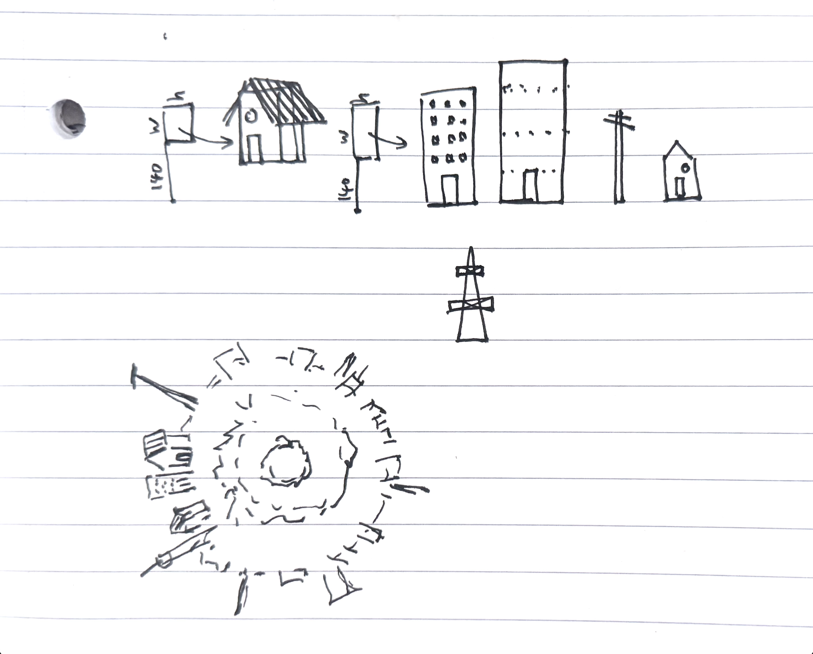
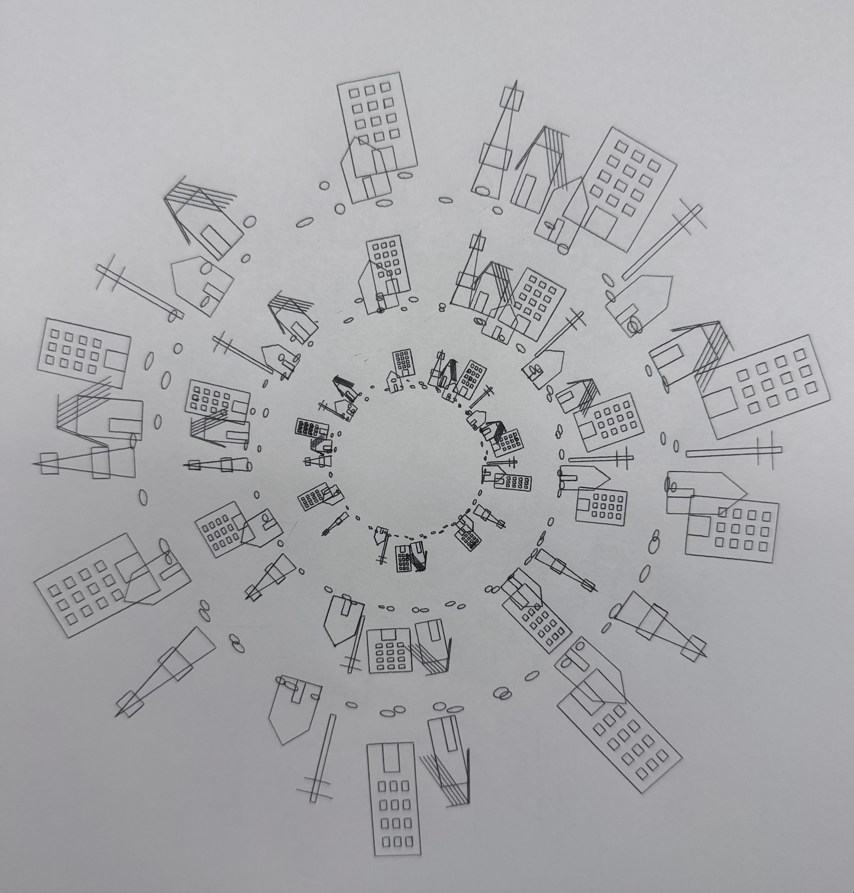
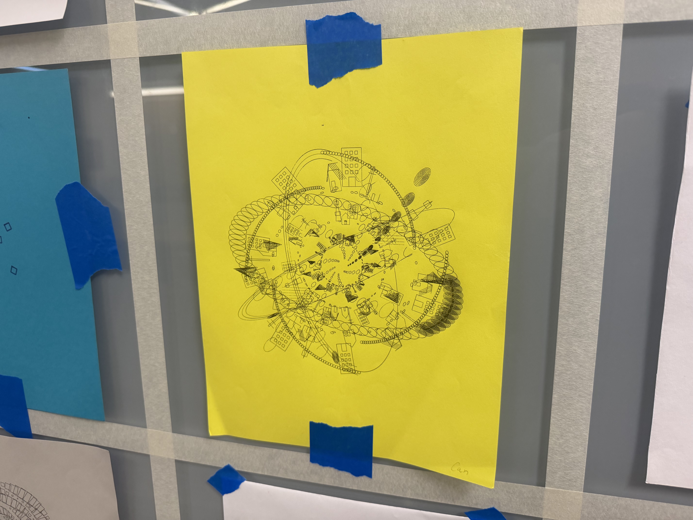
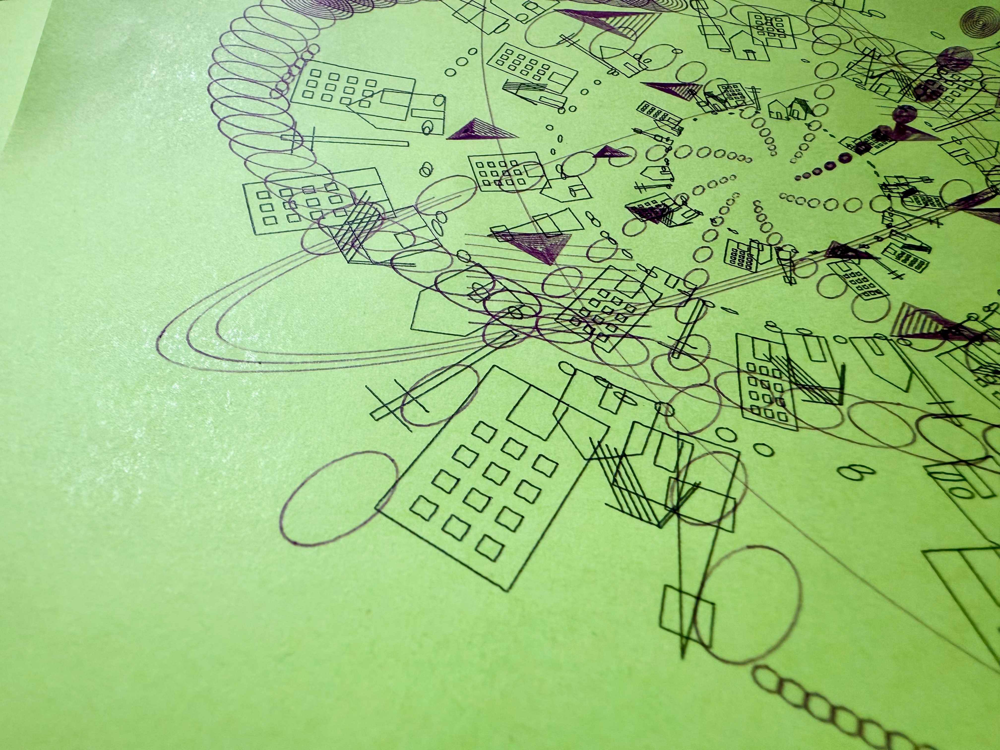
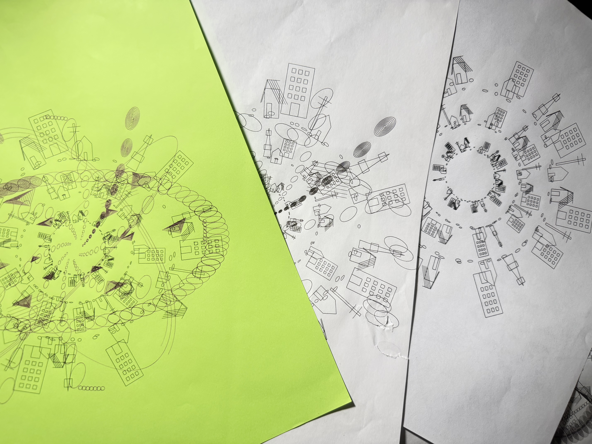

This work is inspired by myths about humans once living underground. I use multiple circular layers of architectural patterns to create the feeling of an underground city, as if the buildings extend deeper and deeper into the earth. By moving the mouse along the X and Y axes, the viewer can change the positions of the buildings on the rings, making the city shift and reorganize itself.
Since week4 and week5 were combined, the week4 sketch only shows the initial version of the design.
As for future updates, I thought I would incorporate more natural elements to create a layered, surrounding effect in the overall composition. Although I didn’t end up using actual animal images in my final work, instead creating abstract geometric patterns, at that moment I was imagining birds in circles, vines, or stars.
As for the drawing tools, the drawings I exported are actually in two colors. However, since the lines needed to be extremely thin, out of all the pens I tried, the ballpoint pen worked best. I also created a version with black and blue lines, but after showing my friends the different color versions, we all agreed that the combination of yellow and black best captures the controlled beauty of the lines.
While observing other students using the device, I once noticed a student having a problem where the pen would reach the end of the track and the device kept vibrating, but the issue wasn’t resolved at the time. Unexpectedly, I encountered the same problem when using it myself. When the ballpoint pen tore through the paper, I had to press the button on the machine to force it to stop. After restarting the machine and setting it to return to the origin, the pen reached the end of the track and couldn’t move forward, causing the same vibration.
I checked the draft size in Inkscape, and it was fine. It took several tries to figure out that when the pen had previously experienced a “vibration” upon reaching the end of the track, from the computer’s perspective, the pen had moved a certain distance during that time, but in physical space, it hadn’t actually moved at all. Therefore, when we use the “return to origin” function, the distance the computer calculates forthe return differs fromthe actual distancethe pen needs to travel. This might be considered a small discovery regarding how to solve this issue.




